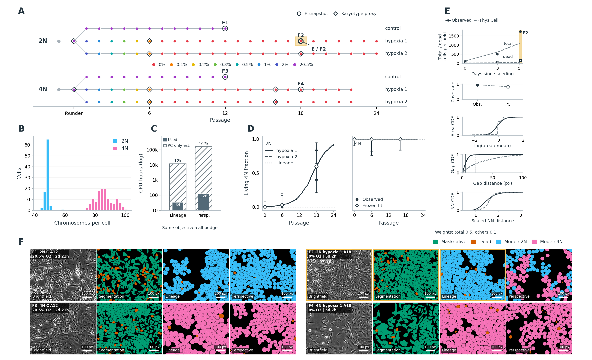

We implemented a PhysiCell model and multimodal calibration workflow, piloted in SUM-159 progressive hypoxia and normoxic controls from 2N and 4N founders, with 343 microscopy acquisitions across 118 culture episodes and 220 single-cell chromosome counts (Fig. A,B). Two general baselines are considered: in the lineage-guided baseline, recorded lineage relationships define clone identity and parameter sharing, with ridge-coupled founder parameterizations held constant across arms and passages in this pilot. In the perspective-guided baseline, investigator-chosen accompanying data define states and parameter sharing; here chromosome-count clusters define current 2N/4N genomic states shared across founders and treatments. Pre-existing mixtures change through differential division and survival, without state transitions. Fits to prepared measurements use a two-stage workflow: an analytical approximation proposes candidate parameter sets, followed by PhysiCell evaluation and correction, bounded local refinement and independent validation (Fig. C–F). These fits provide mechanistic starting points for hypothesis-driven changes and refitting.

A two-stage workflow calibrates spatial models against longitudinal SUM-159 observations. A, Recorded lineage and oxygen histories, with chromosome-sampling proxies; the highlighted 2N hypoxia 1 A18 passage links to E and F2. B, Pooled single-cell chromosome counts, colored by the two genomic-state clusters. C, Measured CPU use versus a fixed-call-budget PhysiCell-only estimate for each fit, excluding local preparation and reporting; additional native composition-closure iterations are unpriced. D, Living 4N fractions under hypoxia, with hypoxia 1 and hypoxia 2 trajectories, molecular observations and Wilson 95% intervals, fitted proxies, and the dotted lineage reference. E, A lineage-model example of measurements and distributions entering the weighted cost: total retained live + dead count (0.5), and dead count, coverage, relative area, gap and Clark–Evans organization (0.1 each). Count comparisons average two seeds; spatial illustrations use one seed and four observed fields. F, Four matched acquisition groups, each showing brightfield, segmentation and both models in representative crops covering 25% of the field. Gold frames link the observed field, segmentation and lineage simulation to E. Brightfield and segmentation share a registered crop; independent model fields have separately selected crops. Fitted statistics use full fields. Scale bars, 100 pixels. Segmentation colors indicate living (green) and dead (orange) cells; model colors indicate 2N (blue), 4N (pink) and dead (orange), referring to founder identity for lineage and current genomic state for perspective, without cell-to-cell correspondence. Perspective native fields are independent realizations; microscopy was evaluated at fitted mixtures, and composition was rechecked separately. These are calibration comparisons, not prospective validation.